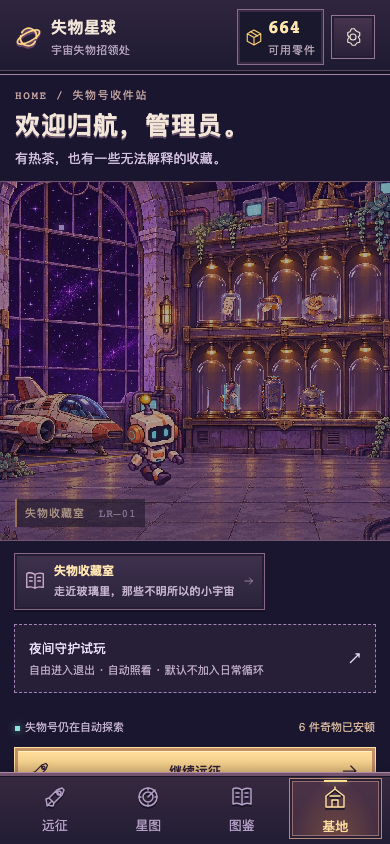
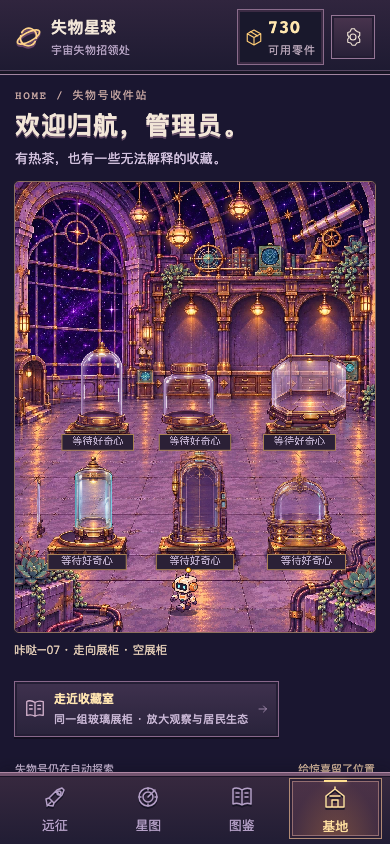
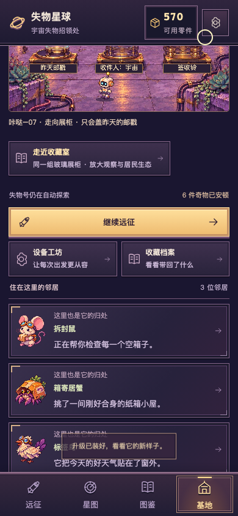

首页收藏室 × 原远征昼夜
后续手机确认机器人走动，同时报告展柜与台架未对齐。当前校准版见 0.2.3最新审核页；本页保留0.2.2完整昼夜证据及历史首页，昼夜逻辑未改变。
0.2.2 · 14cc368 · 逐项修订/验证/限制 · Draft PR #2
实际生产构建、390×844移动触控仿真。视频连续按真实墙钟运行，无加速。不是 TapTap 真机截图/录像；手机扫码验收仍待用户反馈。测试快照仅用于已有收藏的展示，不触碰用户存档。
首页旧/新与三种状态

旧首页：静态站房与小叠图（历史0.2.0） 新首页：同一分层玻璃收藏室
新首页：同一分层玻璃收藏室
未拥有：真正的空柜
真实付款后的升级状态基地连续整理与六件互动
30秒真实运行：走向两个不同展柜，观察、取出、放回、返回从首页实际玻璃展品触控，逐件“试一试”
六件玻璃近景
同一实际首页 Canvas 原生像素裁切并最近邻2倍放大，非另画素材。实际390px比例请看上方首页。